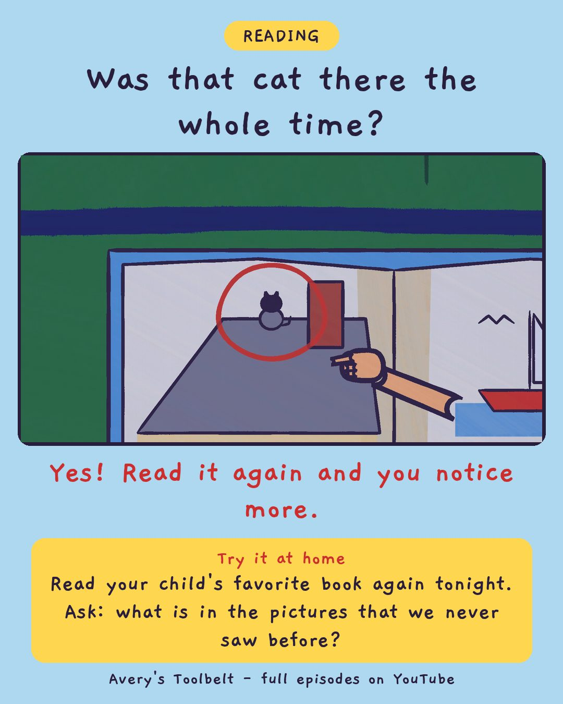

Read It AgainWhy Read the Same Book Again?
再唸一次

Was that cat there the whole time?
Yes! Read it again and you notice more.
Try it at home
Read your child's favorite book again tonight. Ask: what is in the pictures that we never saw before?
Free printable coloring page (PDF) Watch the full episode on YouTubeAbout this episode, for grown-ups
It is night eight of the boat book. It is not a very good book, and Avery knows it, and it makes no difference whatsoever. Mom is sick of it, and says so - kindly, but she says it. Avery is stung, because the book is hers. Before Gus's turn ends, he reads his forty-word tractor book to Spec the puppy, very fast and very loud, and says "Again."
Mom sorts it out first: she's sick of the boat, not of Avery, and not of the two of them in the chair with a book. So she keeps reading it, slowly, with the stops in. And on night eleven, Avery finds something in the pictures that has been there the whole time.
What children find out: reading it again is not the same as reading it. When you know the words, you have room to notice the pictures. Look for the cat.
For grown-ups: an episode for every parent who has read the same book eleven nights running - and found out, on the eleventh, what the eleventh is for.